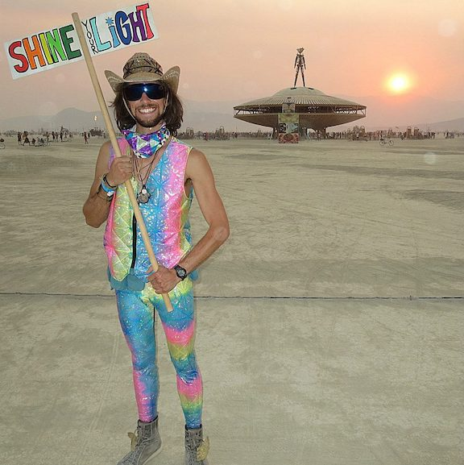

Before I found Turing as the next big neon sign on my life's horizon, I spent just shy of a decade following the rainbow current of life through the ebbs and flows of the West Coast festival universe. There are a few key why's and how's to how this chapter began, but it all really started with a sewing machine. It was a Singer Talent, purchased in the Winter of 2011 that was originally intended for making blankets as Christmas Presents for my family. What I didn't know at the time was that really it was a gateway into my first artistic expression that would be the ship that would take me to far and distant lands.
A huge piece of the festival world is costumes. Dressing up and expressing myself in fun and funky ways is always been something I have loved. I have always been drawn to bright colors and funky patterns which started with the typical tie-dye shirts, but as my exposure to festival culture grew and expanded, I found myself wanting to wear clothing that I simply couldn't buy at the mall, online, or anywhere else I knew where to look. Eventually I decided that if I couldn't find anything that really reflected the essence of who I wanted to present myself as, I would have to make it. It was this decision that would greatly alter the entire trajectory of my life for years to come.
The photos above represent the transition over the course of the first year when I started making my own clothing. It was a time in my life where I had graduated college with a very useful English degree (haha) and I was searching for my place in a wide open world of infinite possibility. It was around this time that I also was serendipidously ushered into the magical world of Northern California cannabis trimming, a lucrative and completely crazy profession that gave me the freedom and financial backing to pursue sewing full time . After my 2011 season in California I was able to invest in a Babylock Imagine surger, the machine that allowed me to take my craft from hobby to profession.
A surger has a distinct advantage over a traditional sewing machine in that instead of 2 threads being used (one in the needle and one in the bobbin), it creates a 4 thread interlock stitch which allows for spandex to maintain its stretch. Now, instead of my clothes running the risk of busting a seam from too much dancing, I could be confident that my creations would last a hundred dance parties, guaranteed. With the addition of this tool into my arsenal, I started diving deeper down the sewing rabbit hole and expanding the variety of things I could sew and sell to support my habit of attending music festivals all Summer long.
2012 also was a massive turning point in my life, as I made my first journey to Black Rock City, the dusty desert mecca known as Burning Man. The creativity and expression I witnessed over the course of my first week in the desert shifted something inside of me, as it dawned on me that there were 60,000+ potential customers that attended this yearly gathering, and if I could get even a fraction of those people to buy my clothes I would be in business. Specifically, in the sparkle business.
What started as a hobby quickly became an obsession, and by 2013 I was well on my way to building a brand and launching a business that was specifically designed to help others embody their sparkliest, silliest selves. Fueled by the overwhelming support from my close festival community and financed by my seasonal trimming work, I sewed every single day from December 2012 through the following Spring. At first my partner and I would make the drive from Portland, OR to Bellingham, WA to vend at bars where our friends were playing shows. For the first time in my life I was creating something with my own hands that I was proud of, and more importantly that people were willing to give me money for! Stepping into the reality where I was a professional artist was a magical time in my life, and to this day teaching myself how to sew has been one of the most significant investments I have ever made in myself.
Between 2012-2017 I went to something like 60 festivals and ended my Summer by making my way back to Burning Man to wrap up another year of growth. Watching the man burn each time was like my own personal New Year's celebration. Burning Man became the place that I debuted my newest designs and every year I was able to see the significant progress I had made from the year before. Year after year the amount of Fractal Funhouse gear being made to be worn on Playa grew, and I spent my weeks leading up to the Burn pulling 18 hour days sewing sparkles. The stress that came with this time of year always had me under so much pressure, but as soon as I stepped foot back in that dusty wonderland, everything would be worth it as I was able to unplug from the default world and immerse myself in what was always guaranteed to be the best week of my year.
In 2017 right before the whirlwind of Summer approached on the horizon, I made a trip to Colorado to visit my best friend. During this very brief 4 days, I met a girl that would once again change the trajectory of my entire life. A few weeks later she made the drive out to Oregon for the Oregon Eclipse Gathering, where we witnessed a total eclipse of the sun. August 21, 2017 was one of the most powerful and meaningful days of my entire life (so far) and not long after that I decided I was going to move to Colorado to be with her. I went back to California for my final stint in the cannabis world, and after a few weeks working I packed my life up into my van (mostly all of my sewing equipment and fabric collection) and drove East into the sunrise.

Colorado is the first permanent home I've had in 6 or 7 years. Most of my 20's were spent based in Oregon but traveling anywhere and everywhere that made sense, pausing only long enough to sew sparkles, then I was off on the next adventure. I very much uprooted my entire existence when I moved to Colorado, and for the first year I kept up with my sewing as it was the most stable and consistent thing that I knew. I've changed the style of my designs to fit the region, and it's been a major shift from the merry-go-round lifestyle that I existed in prior to moving. Steadily though, I have put down solid roots in a place that I love, and sewing has become more of a hobby to outfit my close friends and much less of a professional pursuit. Sitting down with my machines and working with sparkle fabric in my studio has been the most constant, comfortable and stable thing in my life since 2012, and it will always be my primary passion.
There's something about coding that reminds me of sewing. Being by myself, sitting at my command center and working on a project that I am simultaneously excited about and massively challenged by is familiar to me. My hope is that coding is my next horizon, the next frontier for me to explore. I hope that this next chapter will be filled with as much learning and growth and adventure as the last, and that it will take me to far and distant lands and shows me things beyond my wildest dreams. I look forward to exploring this universe and look forward to the people and places I encounter along the way. I am excited to look back on this moment in 7 months and in 7 years and see how far I've come.